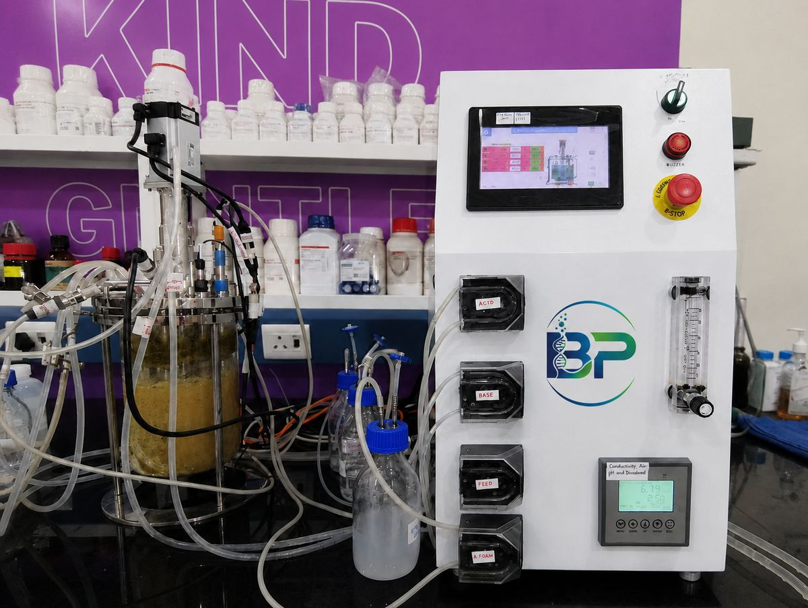
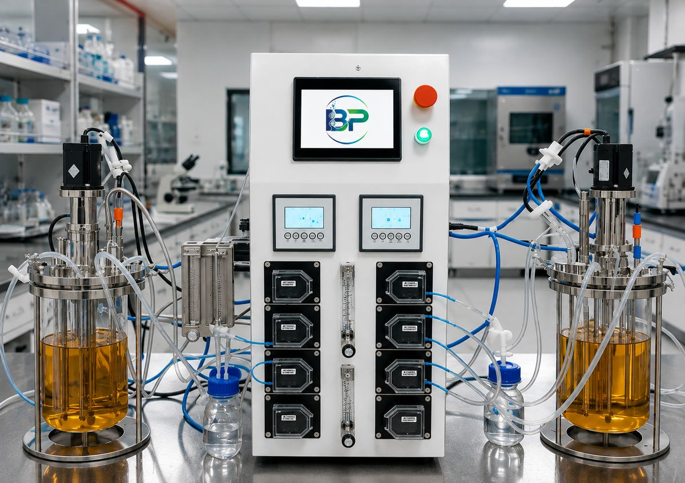
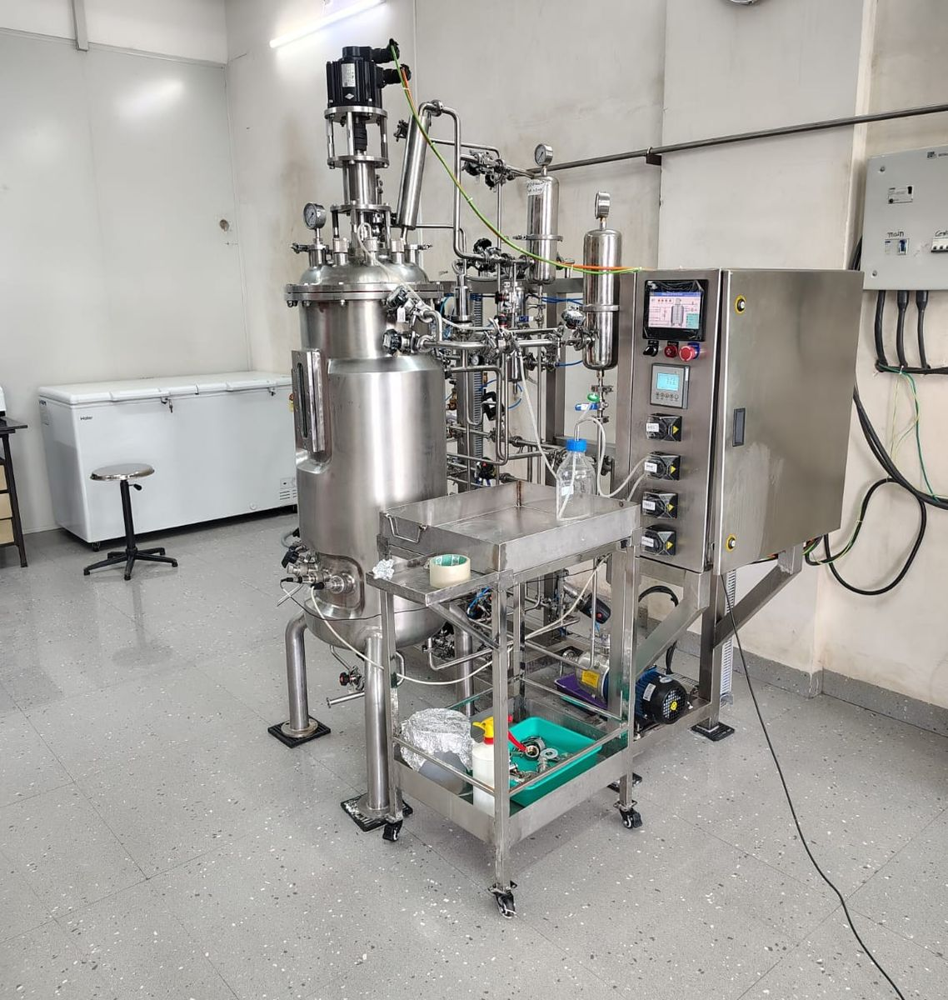
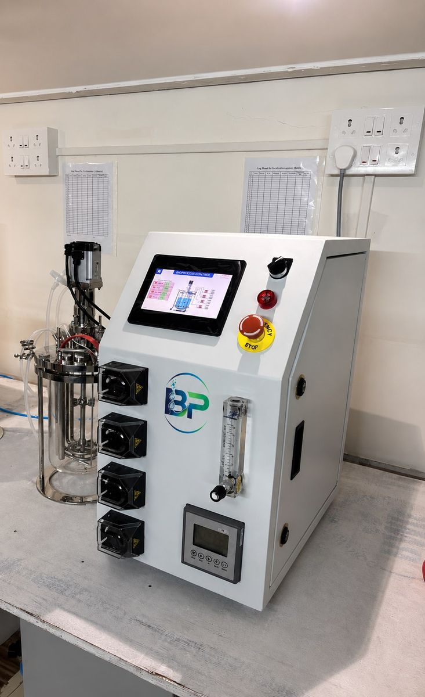
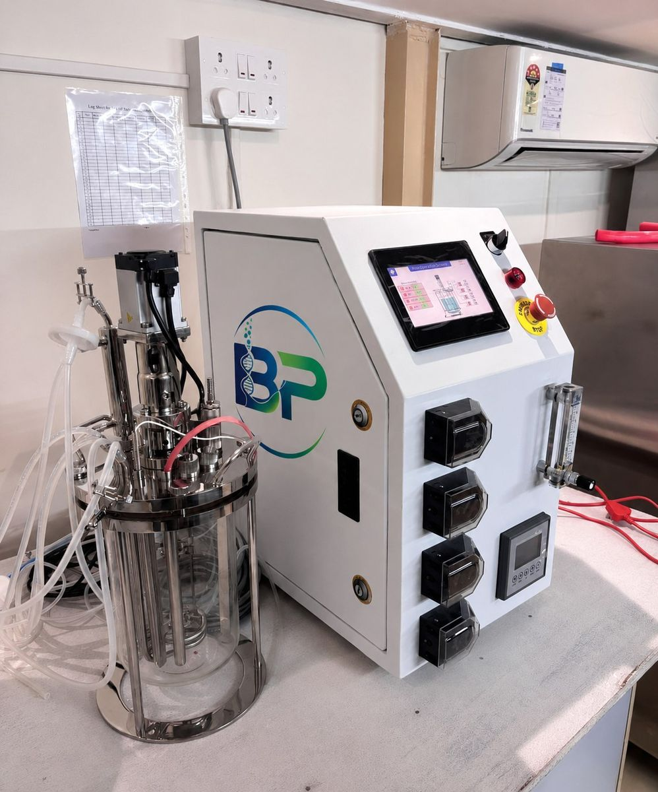

Real systems, running in real labs
A look at Bioprim fermenters and bioreactors deployed at biotechnology institutions, universities, research organizations, and pharmaceutical companies across India.





Case studies
Production-Scale Fermenter System
Supplied a 500L fermenter system, together with SS316 process spares and consumables, to a leading fermentation-based pharmaceutical company in Gujarat — backed by a 12-month installation warranty.
Pilot-Scale Fermenter
Deployed a 120L pilot-scale fermenter supporting nutraceutical, probiotic, pharmaceutical, enzyme, and biofertilizer production trials.
Pilot-Scale Fermenter
Commissioned a 100L pilot-scale fermenter for enzyme production process development.
Lab-Scale Glass Fermenter
Supplied a 5L laboratory-scale glass fermenter for early-stage research and process development work.
Want to see your process in this list next?
Tell us about your application and we'll help design the right system.